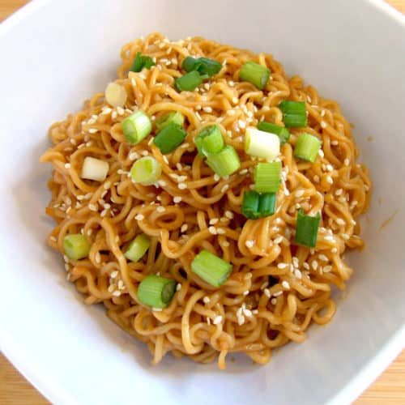

Sesame Peanut Noodles

Make a big batch of these nutty, sweet, and soy saucy noodles and enjoy them cold for a quick lunch over a few days. It is the best make-ahead recipe for your back pocket!
Ingredients
- 8 ounces dry soba, rice, or egg noodles
- 2 tablespoons toasted sesame oil, divided
- 3 tablespoons natural peanut butter
- 1/4 cup soy sauce
- 1 1/2 tablespoons honey
- 1 1/2 tablespoons rice vinegar
- 1 clove garlic, grated
- 1 tablespoon toasted sesame seeds, for garnish (optional)
- 1 green onion, sliced, for garnish (optional)
Method
- Cook the noodles
- Prepare the sauce
- Assemble the noodles
- Scrape the peanut sesame sauce on the cold noodles and toss to combine. Garnish with sesame seeds and green onions, if desired
Home